Task 3 - Establishing Relatinships Between Tables
Introduction
Welcome to this tutorial on establishing relationships between tables in MySQL Workbench. Tables in a database can be linked together by primary and foreign keys. In this guide, we will show you step-by-step how to create a foreign key (FK) in MySQL Workbench. You will need at least two tables in your database that reference each other to use these instructions.
Establishing relationship between tables requires the database contains at least two tables, and the tables contain related data. Our example models the relationship between a course and an instructor.
Note: The examples we created below reference the examples from Task 1 and Task 2. If you want to follow along with the examples for this Task, create the examples from the previous tasks first.
Creating Foreign Key
The following instructions show how to create a foreign key (FK) in MySQLWorkbench.
Note: For reference on primary and foreign keys, visit the MySQL Reference Manual glossary.
-
Double click on the name of the schema that contains the table you want to edit from the menu on the left.
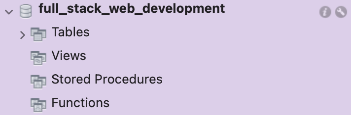
The schema name should be bolded and a menu should open up beneath the name.
-
Click on the arrow beside “Tables” to view the list of tables in the database. 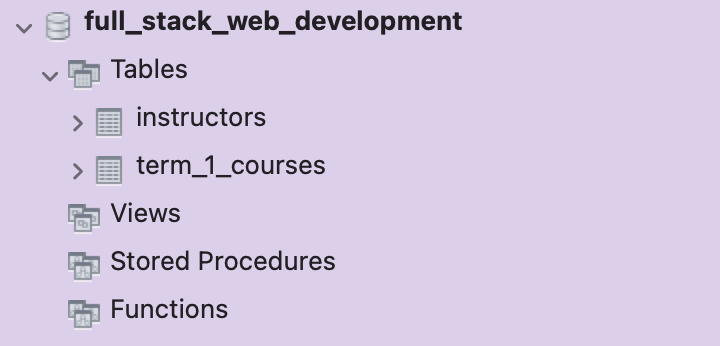
-
Hover the mouse over the name of the table where the foreign key will be added.
Three icons should appear to the right of the table name.
-
Click the wrench icon. The "Edit Table Screen" should come into view.
-
Click the "Foreign Keys" tab in the menu near the bottom of the "Edit Table Screen".
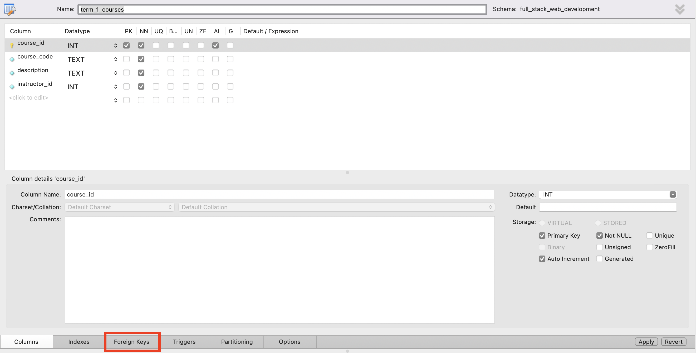
The "Foreign Key Screen" should come into view.
-
Double click < click to edit > underneath the "Foreign Key" heading on the left of the "Foreign Key Screen". 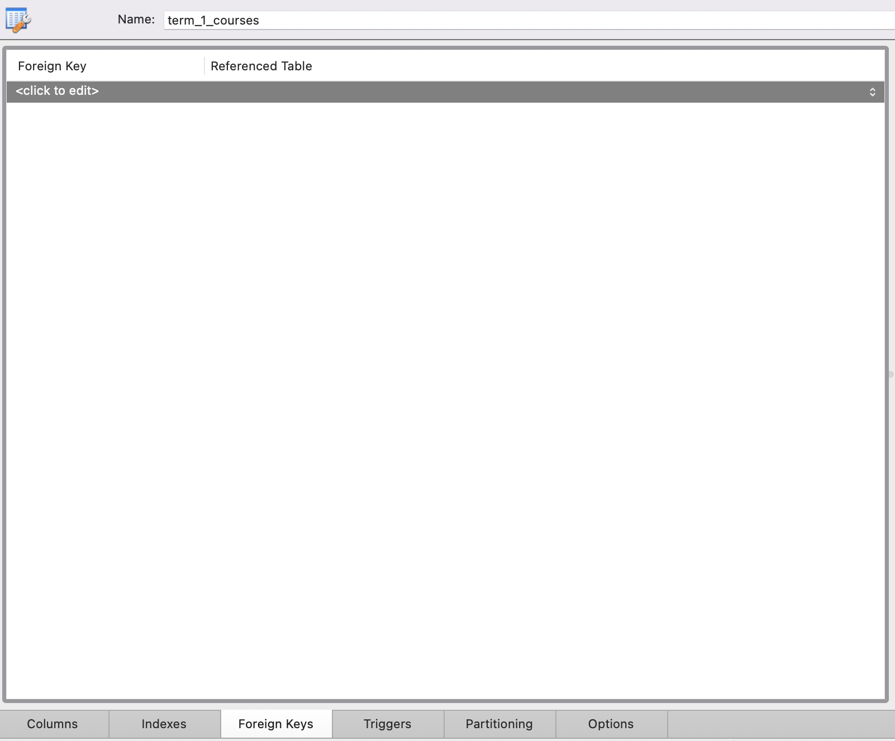
-
Type a name for your FK and press ENTER.
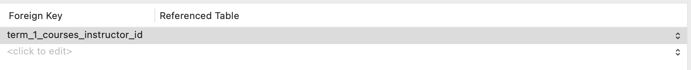 We named our FK "term_1_courses_instructor_id".
-
Click next to the FK name under the “Referenced Table” heading.
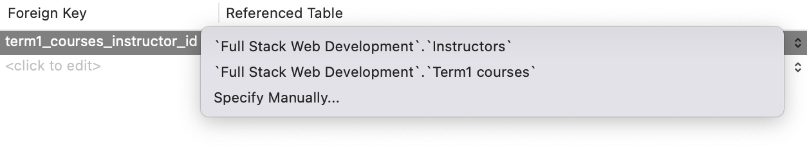
A list of tables in your schema should appear.
-
Select the table that the FK is referencing. 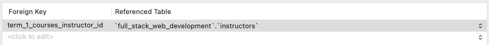
In this example, we selected "instructors" as the referenced table.
After making the FK, the table's columns' names should appear under "Foreign key details".
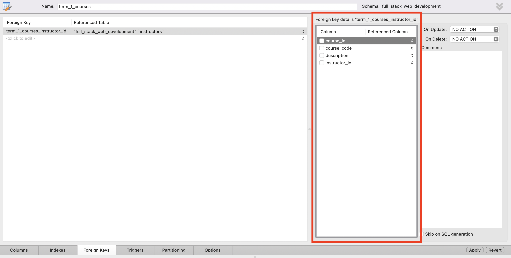
-
Check the box for your FK column beneath the "Column" heading under "Foreign key details".
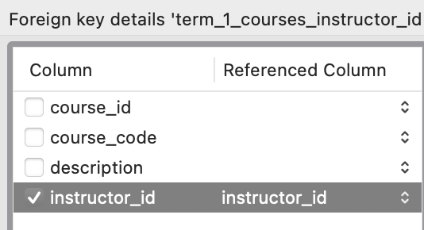
Then, the referenced column should default to the primary key of the referenced table.
-
Select the column the FK is referencing by clicking under the "Referenced Column" heading (if it is not already selected).
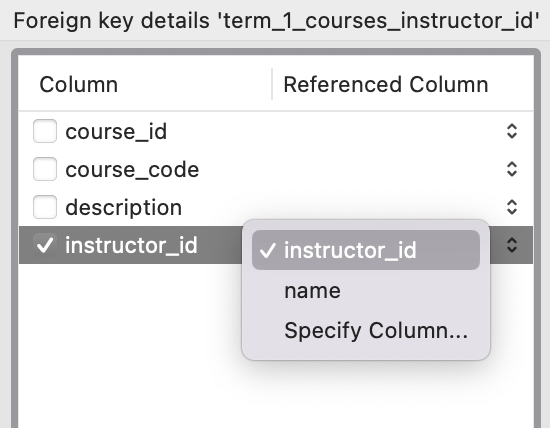
-
Click "Apply" at the bottom of the "Foreign Key Screen".
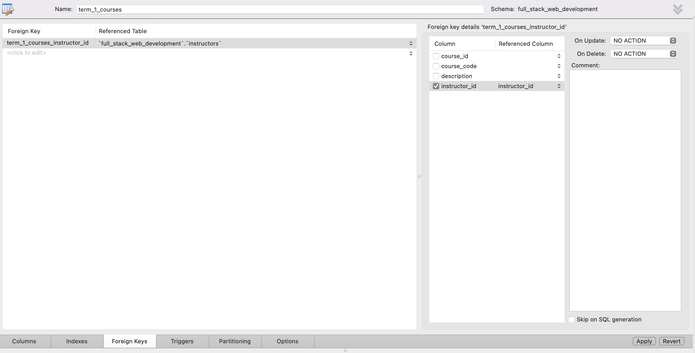
A pop-up window should appear displaying the MySQL query for creating the FK.
-
Click “Apply”, then "Close".
Conclusion
Establishing relationships between tables is an important aspect of database management. In MySQL Workbench, this can be done by creating foreign keys between tables. By creating foreign keys, tables can reference each other and maintain data integrity. In this task, we learned how to create foreign keys in MySQL Workbench. We went through step-by-step instructions on how to create a foreign key, including selecting the tables and columns involved, and applying the changes.